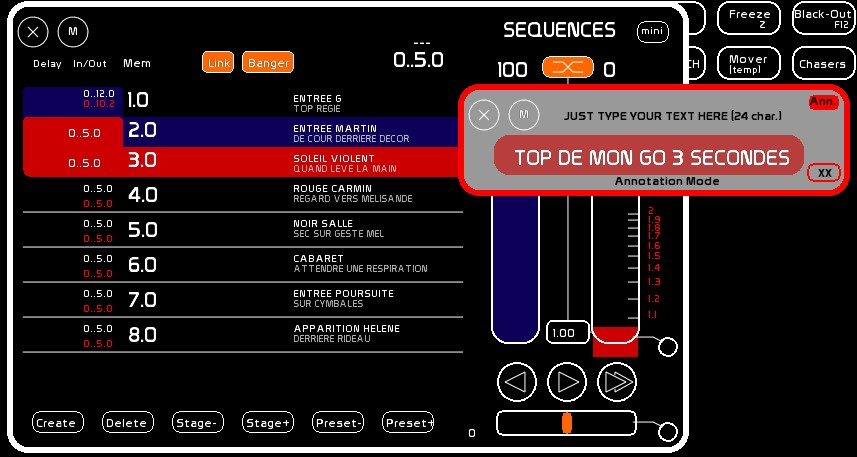

Table des matières
NAME window
Name is used to create and edit descriptions. Any description in White Cat (a channel a memory or a dock , …) is done by using this window.
To open/close [NAME]
- click [NAME] or press [F5]

- type your text. Maximum 24 characters
- click the container (target) that is to receive this text description

Name options
version 0.8.2:
Annotation Mode
Clicking on the small box [ANN] will switch to Annotation mode and the window will turn gray.
For the moment this peculiar mode is only available for the CueList, where it permits you to add a second line of description, considered an annotation to the GO description which can describe the purpose of the cue or anything else as suits your needs. [NAME] in the basic mode will edit the first line, and the [ANN] mode will edit the second line.

AutoClose Mode
Clicking on the small box at the bottom right [XX] will set the AutoClose feature to ON:
Then when a name is assigned, the window will automatically close. Deselect this option if you are editing a large number of descriptions.